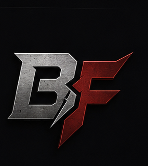

Baeza Fabworks was built around a simple idea: if the part you need doesn’t exist, build it.

I’ve spent years working with metal, solving fabrication problems, and turning ideas into functional parts. My background includes custom motorcycle fabrication, automotive work, MIG and TIG welding, machining, CNC plasma cutting, CAD design, prototyping, and 3D printing.
Before Baeza Fabworks, I worked professionally in the custom motorcycle industry, including as a fabrication manager for Azzkikr Customs. My work has ranged from one-off components and custom handlebars to suspension modifications, exhaust systems, bodywork, brackets, fixtures, and parts built specifically around the needs of a project. Some of those builds have appeared in motorcycle magazines, television features, and major rallies.
But the kind of work I enjoy most hasn’t changed: figuring out how to make something work when there isn’t an off-the-shelf solution.
Today, Baeza Fabworks combines traditional fabrication with modern design and manufacturing tools. Depending on the project, that might mean starting with a cardboard template and a piece of steel, designing the part in CAD, machining a component, cutting it on the CNC plasma table, 3D printing a prototype, or using several of those processes together.
Baeza Fabworks isn’t a production factory. It’s a small fabrication shop focused on custom work, repairs, modifications, prototypes, and unusual projects.
Some customers show up with a drawing. Others bring a broken part. Sometimes the starting point is nothing more than: “I need something that does this.”
That’s enough. We’ll figure out the rest.